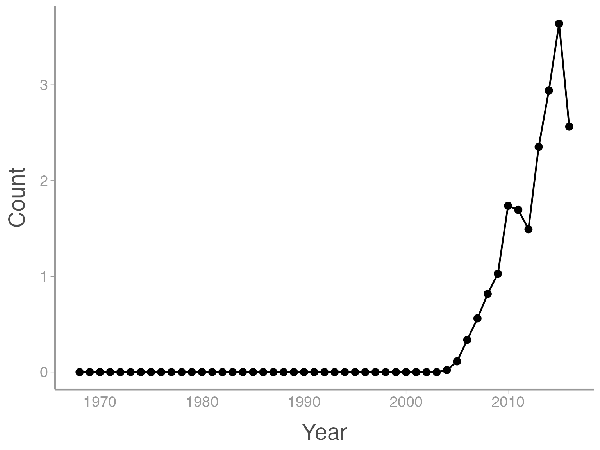
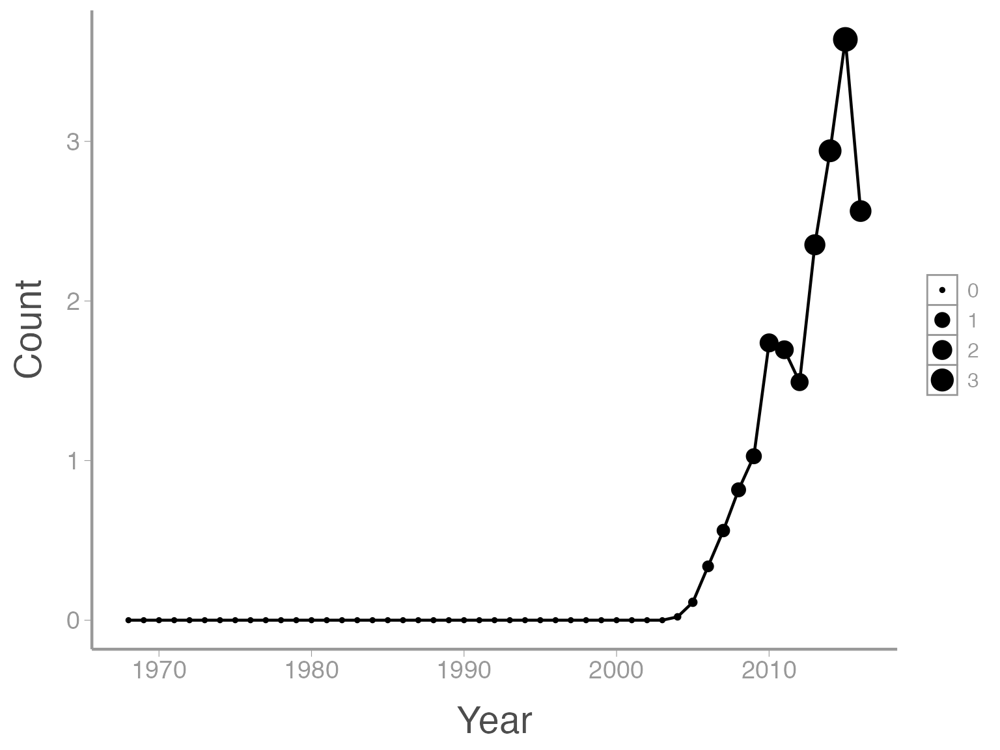

Lab 2: Modeling and visualizing population growth
WILD3810: Plant and animal populations
Spring 2020
lab2.RmdIn this lab, you will learn to model and predict the growth of plant and animal populations using R. Continuing from the first lab, we will continue learning how to use R to create and manipulate objects, with a particular focus on moving from vector objects to data frames. We will also learn about some basic plotting functions to visualize the dynamics of our study populations.
Objectives
Model and visualize density-independent population growth
- Learn/review basic data manipulation tasks, including:
- Subsetting vectors
- Creating and subsetting data frames
- Create summaries of raw data
- Saving data
-
Rfunctions used in this exercise:
Set up
Log in to R Studio Cloud
Create a new project called
LastnameFirstname-Lab2-
Create a new R script file to store code from this lab:
3a) Click
File -> New File -> R Script3b) Save the script as
Lab2
Modeling exponential population growth

Image courtesy of Charles J Sharp via Wikicommons (CC BY-SA 4.0)
For this exercise, we will use data from the North American Breeding Bird Survey to model and visualize the rapid population growth of Eurasian collared-doves (Streptopelia decaocto) in the state of Utah. Eurasian collared-doves are an introduced species that, as you will soon see, have been rapidly expanding westward across the United States since they were introduced in Florida in the early 1990’s.
The Breeding Bird Survey is a roadside monitoring program conducted by volunteers across North America every year since the late 1960’s. Each survey route is 25 miles long and surveyors stop every 0.5 mile (50 stops total) to count every bird they see or hear. For this lab, we will use the average number of counts in each year across all BBS routes that are located in Utah.
Getting the data
A summary of the Utah collared-dove counts is included in the course package WILD3810. One thing we did not discuss in lab 1 was what packages are and how to access their content in your current R environment (remember that every time you open RStudio, it creates a new “environment”. This environment stores all of the objects you create during that R session). Packages are ways to share custom R functions and data that do not come with R itself. Packages allow anyone to contribute useful code and data for other R users to use as part of their analyses. The install.packages() function downloads the package onto your computer (note that we use a slightly different function to install the WILD3810 package but 99% of the time you will use install.packages()).
It’s important to realize that installing a package does not automatically make it’s code and data available with your current R session. When you open R, you have to load the package in order to make its functions and data available in the current session. Packages are loaded using the library() function with the package name as the argument:
Now that we have loaded the WILD3810 package, we can load the dove data using the data() function. This function is used to load data objects that come with packages:
Notice that in the Environment tab in the top right panel, you now see an object called ut_dove_counts. This object holds the data values we will use in this exercise.
Introduction to data frames
In the first lab, we learned about one particular class of R object - vectors. Vectors hold a string of values as a single object. Although useful for many applications, vectors are limited in their ability to store multiple types of data (numeric and character).
This is where data frames become useful. Perhaps the most common type data object you will use in R is the data frame. Data frames are tabular objects (rows and columns) similar in structure to spreadsheets (think Excel or GoogleSheets). In effect, data frames store multiple vectors - each column of the data frame is a vector. As such, each column can be a different class (numeric, character, etc.) but all values within a column must be the same class. Just as the first row of an Excel spreadsheet can be a list of column names, each column in a data frame has a name that (hopefully) provides information about what the values in that column represent.
To see how data frames work, let’s view the ut_dove_counts object. We can do this in several ways. The head() and tail() functions, for example, will print the first and last 6 rows of the data frame:
head(ut_dove_counts)
#> # A tibble: 6 x 2
#> Year Count
#> <int> <dbl>
#> 1 1968 0
#> 2 1969 0
#> 3 1970 0
#> 4 1971 0
#> 5 1972 0
#> 6 1973 0
tail(ut_dove_counts)
#> # A tibble: 6 x 2
#> Year Count
#> <int> <dbl>
#> 1 2011 1.69
#> 2 2012 1.49
#> 3 2013 2.35
#> 4 2014 2.94
#> 5 2015 3.64
#> 6 2016 2.56We can see that ut_dove_counts contains two columns: Year and Count (the counts are actually mean number of Eurasian-collared doves counted across all BBS routes within the state of Utah in each year). Obviously there weren’t many collared-doves in Utah in the late 1960’s/early 1970’s. Several other useful functions for investigating the structure of data frames are str() and summary()
str(ut_dove_counts)
#> Classes 'tbl_df', 'tbl' and 'data.frame': 49 obs. of 2 variables:
#> $ Year : int 1968 1969 1970 1971 1972 1973 1974 1975 1976 1977 ...
#> $ Count: num 0 0 0 0 0 0 0 0 0 0 ...
summary(ut_dove_counts)
#> Year Count
#> Min. :1968 Min. :0.000
#> 1st Qu.:1980 1st Qu.:0.000
#> Median :1992 Median :0.000
#> Mean :1992 Mean :0.394
#> 3rd Qu.:2004 3rd Qu.:0.021
#> Max. :2016 Max. :3.639str() tells us about the structure of the data frame, in this case that Year is an integer object (only whole numbers) and Count is numeric. For both types of data, summary() provides some simple summary statistics for each variable.
Another useful function is nrow(), which tells us now many rows are in the data frame (similar to length() for vectors):
Because the ut_dove_counts data frame has one row per year, the nrow() function is very useful to determining how many years of BBS data we have (remember that!).
Subsetting data frames
As you will see shortly, one of the most common tasks when working with data frames is creating new objects from parts of the full data frame. This task involves subsetting the data frame - selecting specific rows and columns. There are many ways of subsetting data frames in R, too many to discuss so we will only learn about a few.
Selecting columns
First, we may want to select a subset of all of the columns in a big data frame. Data frames are essentially tables, which means we can reference both rows and columns by their number: data.frame[row#, column#]. The row and column numbers have to put inside of square brackets following the name of the data frame object. The row number always comes first and the column number second. If you want to select all rows of a specific column, you just leave the row# blank. For example, if we wanted a vector containing all of the years the BBS data was collected:
ut_dove_counts[,1]
#> # A tibble: 49 x 1
#> Year
#> <int>
#> 1 1968
#> 2 1969
#> 3 1970
#> 4 1971
#> 5 1972
#> 6 1973
#> 7 1974
#> 8 1975
#> 9 1976
#> 10 1977
#> # … with 39 more rowsHowever, an easier way of doing this is using data.frame$column (where data.frame is the name of the data frame object and column is the name of the column). For example,
ut_dove_counts$Year
#> [1] 1968 1969 1970 1971 1972 1973 1974 1975 1976 1977 1978 1979 1980 1981
#> [15] 1982 1983 1984 1985 1986 1987 1988 1989 1990 1991 1992 1993 1994 1995
#> [29] 1996 1997 1998 1999 2000 2001 2002 2003 2004 2005 2006 2007 2008 2009
#> [43] 2010 2011 2012 2013 2014 2015 2016Notice that if you hit tab after you type the $, RStudio will bring up all of the columns and you can use the up or down buttons to find the one you want.
Sometimes you may want to select more than one column. The easiest way to do that is to use the select() function in the dplyr package:
library(dplyr)
select(.data = ut_dove_counts, Count, Year)
#> # A tibble: 49 x 2
#> Count Year
#> <dbl> <int>
#> 1 0 1968
#> 2 0 1969
#> 3 0 1970
#> 4 0 1971
#> 5 0 1972
#> 6 0 1973
#> 7 0 1974
#> 8 0 1975
#> 9 0 1976
#> 10 0 1977
#> # … with 39 more rowsNotice that select requires us to first provide the data frame object (.data = ut_dove_counts) and then we provide the column names (unquoted!) we want to select. In this case we selected both columns but changed in the order. You can also use select to remove columns:
Filtering rows
To select specific rows, we can use the row# method we learned above, this time leaving the columns blank:
If we want more than one row, we just put in a vector with all of the rows we want:
ut_dove_counts[1:2,]
#> # A tibble: 2 x 2
#> Year Count
#> <int> <dbl>
#> 1 1968 0
#> 2 1969 0
ut_dove_counts[c(1,30),]
#> # A tibble: 2 x 2
#> Year Count
#> <int> <dbl>
#> 1 1968 0
#> 2 1997 0Note that we can use the square brackets to also subset vectors, in which case we don’t need the comma as long as you tell R which column you want first:
Sometimes, we may not know the specific row number(s) we want but we do know the value of one of the columns we want to keep. Using the filter() function in the dplyr package allows us to filter rows based on the value of one of the variables. For example, if we want just the 2004 count, we use:
filter(ut_dove_counts, Year == 2004)
#> # A tibble: 1 x 2
#> Year Count
#> <int> <dbl>
#> 1 2004 0.0211Notice the need for two equals signs (==) when telling R we want the row where Year equals 2. Filter makes it very easy to select multiple rows using operators like greater than, less than, etc.
filter(ut_dove_counts, Year > 2004)
#> # A tibble: 12 x 2
#> Year Count
#> <int> <dbl>
#> 1 2005 0.112
#> 2 2006 0.337
#> 3 2007 0.562
#> 4 2008 0.817
#> 5 2009 1.03
#> 6 2010 1.74
#> 7 2011 1.69
#> 8 2012 1.49
#> 9 2013 2.35
#> 10 2014 2.94
#> 11 2015 3.64
#> 12 2016 2.56or a more complicated example:
Visualizing data frames using ggplot2
R has very powerful graphing capabilities that make it possible to create data visualizations for reports or publications. As with most tasks in R, there are many ways to create graphs. For example, in the last lab we used the hist() function to create a histogram of the 1000 simulated estimates of \(\hat{N}\). For the remainder of the course, we will focus on learning how to make figures using the ggplot2 package.
Brief introduction to ggplot2
The power and flexibility of ggplot2 come from it’s consistent structure. Although a bit confusing at first, once you get the hang of it the structure actually makes it quite easy to create highly customized visualizations. All plots created using ggplot2 use the same underlying structure:
\[\underbrace{ggplot}_{initiate\; plot}(\underbrace{data = df}_{data\;frame},\; \underbrace{aes(x =\; , y = \;)}_{plot\; attributes}) + \underbrace{geom\_line()}_{geometry}\]
The ggplot() function initiates a new plot. In this function, you tell ggplot2 what data frame you will be using for the plot and you tell it how to map attributes of the data to the visual properties of the figures. Attributes are mapped inside the aes() argument. Attributes usually include location (x-axis and y-axis placement), color, size, shape, line type, and many others. In general, each attribute will be mapped to one column of your data frame.
The ggplot() function simply initiates a graph - if you run just that portion of the code you will get a blank graph. We can see that by creating a new plot showing the relationship between Year (the x-axis of the plot) and Count (the y-axis):
You can see that ggplot created a figure with the correct axes and labels. But no data. That’s because we didn’t tell ggplot what type of geometry to use to represent the data. Geometry refers to the type geometric object(s) we want to use to display the data. Common geometries include points (e.g., scatter plot), lines (e.g., time series), and bars (e.g., histograms). There are many others. Once we add a geometry, we can see the data:

In this case, a line graph might make more sense:

It’s also possible to use more than one geometry:

This is reasonable figure showing changes in collared-dove counts across time. But ggplot2 makes it very easy to tweak the way the data is visualized (maybe too easy, you can spend a lot of time tweaking minor details). For example, maybe we want to scale the size of the points based on the size of the counts (so larger points are displayed using larger points). Because we want to map an attribute (size) to a variable (count), we make this change inside of aes:

That’s not exactly what we wanted. Both the line width and the point size are now a function of Count. To make just the points a function of count, we specify size = Count inside of the geom_point() function (anything in the ggplot() function will apply to all geoms):

We can also do things like the change the color of the geometries. In this case, we are not mapping a variable to an attribute (color is not a function of the data values). So these changes happen outside of the aes() argument:

One last example. My personal opinion is that points plotted over a line look a little better when there is a little white space between the line and the point. In ggplot2 a hack to do that is to put white points underneath the red points that are slightly bigger than the red points. To this we add another geom_point() but manually change the size to be slightly bigger than the red points. Also note that ggplot2 adds the geometries in the order that they are included in the code so we need to add the white points before the red points:

Notice that in this case, we aren’t mapping size to any data so we include it outside of aes().
Estimating \(\large \lambda\) and future population size
In the next homework, we will use the BBS counts to estimate the population growth rate of Eurasian collared-doves in Utah and predict the future population size using the exponential growth model. To create this homework:
-
Create a new R Markdown file from the Homework-2 template:
1a) Click
File -> New File -> R Markdown1b) Click
From Templateand scroll down toWILD3810-Homework21c) In the
Namebox, typeLastnameFirstname-Homework21d) Click
Ok -
Ensure that you can
Knitthe file2a) Change “YOUR NAME HERE” in the header section to your name
2b) Click
Knitto make sure you can knit the .Rmd file Complete the assignment as directed in the .Rmd file
Follow the instructions for submission to upload your completed assignment to Canvas